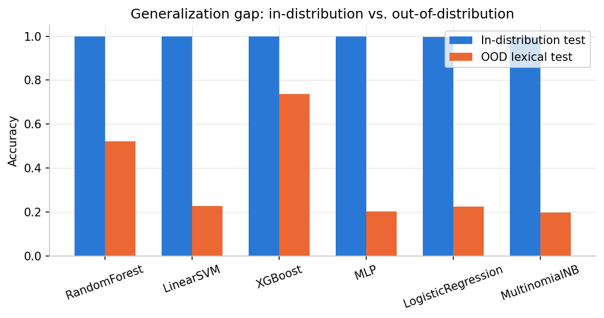
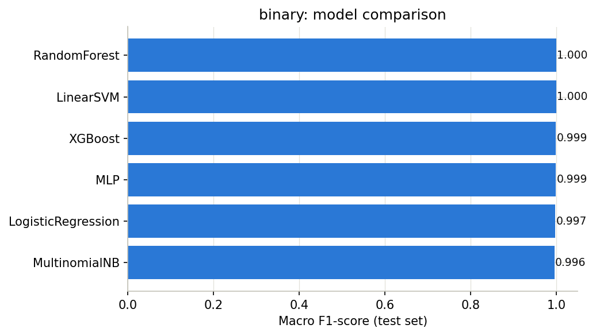
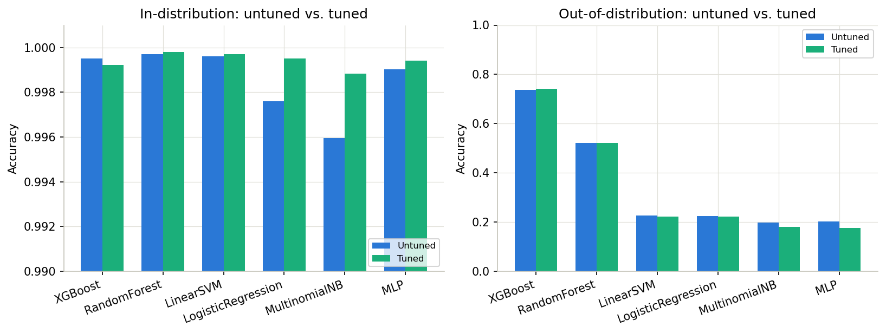
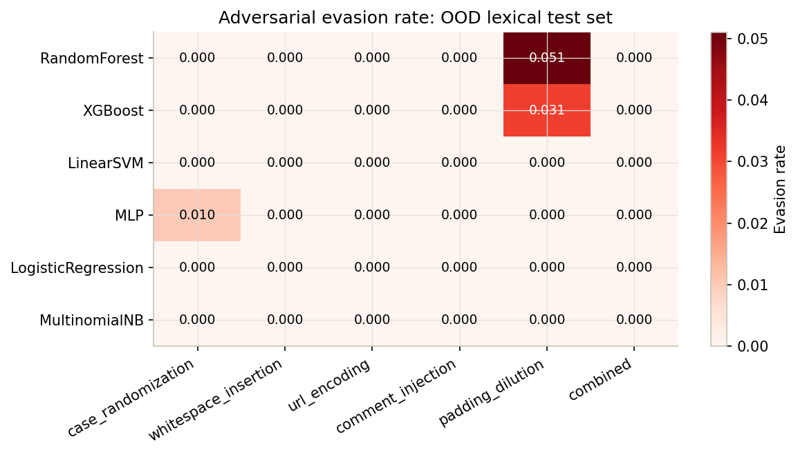

IEEE paper showcase
Benchmarking WAF Payload Classifiers Under Real Distribution Shift
This project is driven by a clear security objective: to maximize the protection of web applications through a hybrid WAF that combines traditional rule-based filtering with different machine learning algorithms for stronger detection of evolving attacks and fewer gaps in coverage.
6
models benchmarked
99.97%
best in-distribution accuracy
73.6%
best OOD accuracy

Key figures

Binary classification performance across the evaluated WAF models.

Tuned versus untuned configurations show the OOD gap remains consistent.

Adversarial robustness evaluation for common obfuscation and bypass patterns.
Why this paper matters
- It benchmarks six common classifiers on real WAF payload classification tasks.
- It tests a realistic lexical out-of-distribution scenario that reflects real traffic drift.
- It quantifies how much the generalization gap remains after hyperparameter tuning.
- It evaluates adversarial black-box evasion strategies and highlights attack weaknesses.
Paper details
- Venue: IEEE conference format
- Focus: WAF payload classification and distribution shift
- Artifacts: source, figures, metrics, and trained models included in the repository
- Goal: reproducible benchmark research that is ready to share and discuss publicly